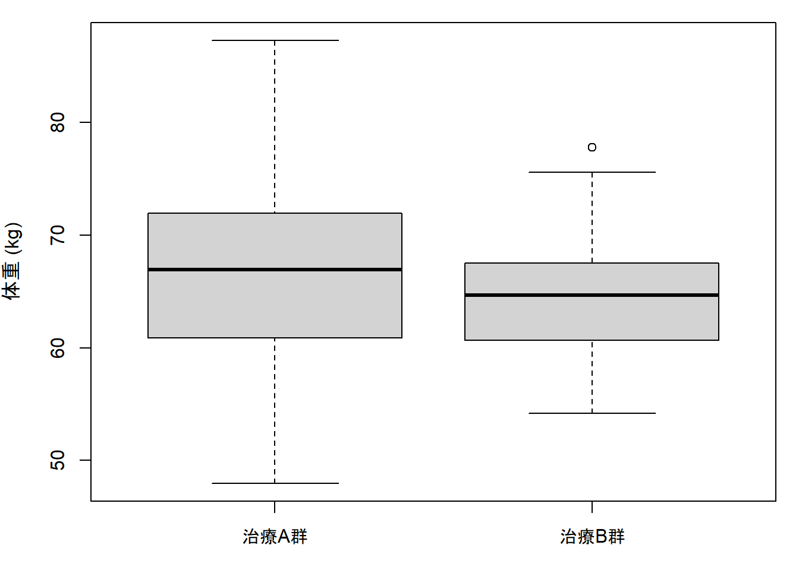
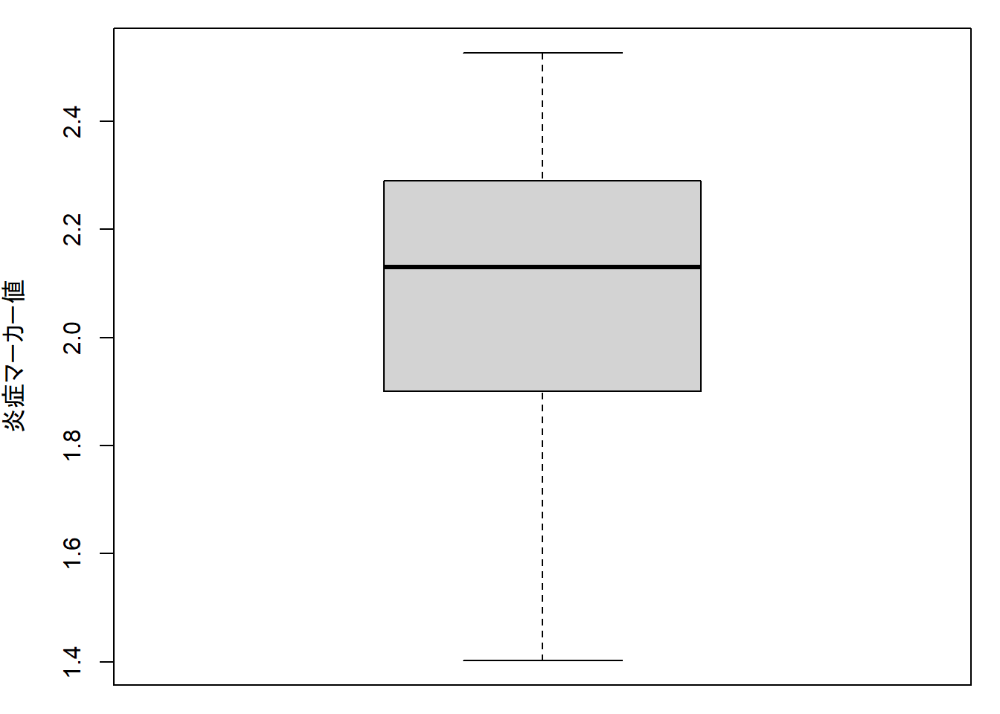
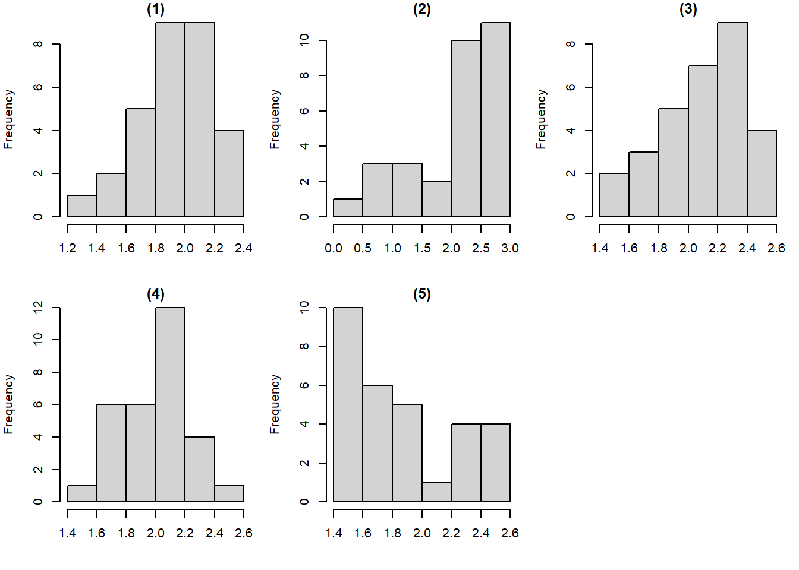

par(mar = c(3, 4, 1, 1))
A <- rnorm(30, mean = 65, sd = 8)
B <- rnorm(30, mean = 65, sd = 8)
boxplot(A, B, names = c("治療A群", "治療B群"), ylab = "体重 (kg)")
川口淳
2026-08-07
以下は、ある患者の基本情報および検査値である。 この中から「連続変数」に該当するものを2つ選びなさい。
正解： 年齢、血清クレアチニン濃度
解説： 連続変数は、理論上ある区間内で連続的な値をとりうる量的変数である。年齢や血清クレアチニン濃度は測定量として扱える。一方、病期分類・性別・主訴はカテゴリとして扱う。
複数の患者から HbA1c を測定したデータが得られた。 これらのデータ全体の特徴を要約するのに適した指標を2つ選びなさい。
正解： 平均、標準偏差
解説： 平均は中心傾向、標準偏差はばらつきを表す。個々人の値や正常範囲は、標本全体の要約統計量ではない。
次のうち、箱ひげ図から読み取れることとして最も適切なものを1つ選びなさい。

正解： 中央値は箱ひげ図から読み取ることができる
解説： 箱ひげ図では箱の中の線が中央値を表す。一方、平均値や標準偏差は通常の箱ひげ図から直接はわからない。
以下の箱ひげ図で描かれた炎症マーカー値の分布に最も近いヒストグラムを(1)〜(5)から選びなさい。


正解： (3)
解説： 箱ひげ図では上側のひげが長く、高値側に外れ値または裾の長さが見られるため、分布は右に歪んでいると考えられる。 したがって、右に裾を引くヒストグラムである(3)が最も近い。
二項分布 \(X \sim B(4, 1/3)\) について答えなさい。
二項分布の確率関数は
\[ \Pr(X=k)=\binom{n}{k}p^k(1-p)^{n-k} \]
である。
\[ \Pr(X=2)=\binom{4}{2}\left(\frac{1}{3}\right)^2\left(\frac{2}{3}\right)^2 =\frac{24}{81} \]
\[ \Pr(X\le 2)=\Pr(X=0)+\Pr(X=1)+\Pr(X=2) =\frac{16}{81}+\frac{32}{81}+\frac{24}{81} =\frac{72}{81} \]
答： (1) \(24/81\)、(2) \(72/81\)
ある感染症に対して有効率50%（\(p=0.5\)）とされている治療薬がある。 この治療薬を患者3人に投与したとき、誰にも効果がない確率を求めなさい。
1人に効果がない確率は \(1-p=0.5\) である。3人とも無効である確率は
\[ (0.5)^3=0.125 \]
である。
答： 0.125
\(X \sim B(12, 0.5)\) に従うとき、 期待値 \(E[X]\) と分散 \(\mathrm{Var}(X)\)を求めなさい。
二項分布 \(B(n,p)\) では
\[ E[X]=np, \qquad \mathrm{Var}(X)=np(1-p) \]
である。したがって
\[ E[X]=12\times 0.5=6 \]
\[ \mathrm{Var}(X)=12\times 0.5\times 0.5=3 \]
答： 期待値 6、分散 3
問3と同じく \(X \sim B(12, 0.5)\) とし、標本比率を \(\hat p = X/n\)（ただし \(n=12\)）とする。
標本比率 \(\hat p = X/n\) の期待値と分散は
\[ E[\hat p]=p, \qquad \mathrm{Var}(\hat p)=\frac{p(1-p)}{n} \]
である。
\[ E[\hat p]=0.5 \]
\[ SE(\hat p)=\sqrt{\frac{p(1-p)}{n}} = \sqrt{\frac{0.5\times 0.5}{12}} \approx 0.1443 \]
\[ \mathrm{Var}(\hat p)=\frac{p(1-p)}{n} \] より、\(n\) が大きいほど標本比率の分散は小さくなる。
答： (1) 0.5、(2) 約0.1443、(3) 「全体の人数が増えると分散は小さくなる」
正規分布について、次の問いに答えなさい。
偏差値について、次の問いに答えなさい。
\[ 50 + 10\times \frac{x-\bar{x}}{s} \]
で定義される。
答： 60
2000人の健診受診者の収縮期血圧 \(X\) は、平均120 mmHg、標準偏差15 mmHgの正規分布
\[ X\sim N(120, 15^2) \]
に従うとする。次を求めなさい（人数は四捨五入して整数）。
標準化すると \[ Z = \frac{140-120}{15} \approx 1.33 \] より、 \[ \Pr(X\ge 140)=\Pr(Z\ge 1.33)\approx 0.091 \] したがって人数は \[ 2000\times 0.091 \approx 182 \]
\[ \Pr(120\le X\le 150)=\Pr(0\le Z\le 2)=\Phi(2)-\Phi(0) \] \[ \approx 0.9772 - 0.5000 = 0.4772 \] したがって人数は \[ 2000\times 0.4772 \approx 954 \]
答： (1) 約182人、(2) 約954人
次の確率を求めなさい（標準正規分布の累積分布関数を \(\Phi(\cdot)\) としてよい）。
\[ \Pr(-1.96\le Z\le 1.96)=\Phi(1.96)-\Phi(-1.96)\approx 0.95 \]
標準化すると \[ \frac{70.6-100}{15}=-1.96, \qquad \frac{129.4-100}{15}=1.96 \] なので \[ \Pr(70.6\le X\le 129.4)=\Pr(-1.96\le Z\le 1.96)\approx 0.95 \]
答： いずれも約 0.95
平均0、分散 \(\sigma^2\) の正規分布
\[ X\sim N(0, \sigma^2) \]
について
\[ \Pr(-1.2\le X\le 1.2)=0.95 \]
であった。分散 \(\sigma^2\) を求めなさい（概数可）。
95%が中央に入るということは、
\[ 1.2 \approx 1.96\sigma \]
と考えればよい。したがって
\[ \sigma \approx \frac{1.2}{1.96} \approx 0.612 \]
よって
\[ \sigma^2 \approx 0.612^2 \approx 0.374 \]
答： 約 0.37
[1] 0.9500042[1] 0.9500042[1] 182[1] 954有効率60%とされている治療薬を5人に投与したところ、4人に効果があった。 母比率を \(p_0=0.6\) と仮定したとき、標本比率 \(\hat p\) の標準誤差 \(SE(\hat p)\) を求めよ（小数第2位まで）。
\[ SE(\hat p)=\sqrt{\frac{p_0(1-p_0)}{n}}=\sqrt{\frac{0.6\times 0.4}{5}}\approx 0.219 \]
答： 約 0.22
有効率50%とされている治療薬を8人に投与したところ、1人に効果があった。 片側の二項検定を行った結果、\(p\)値が0.07であった。有意水準10%での検定結果を、統計的に正しい日本語で簡潔に述べよ。
ここでは対立仮説を「有効率は50%より低い」とする片側検定と考える。 \(p\)値 0.07 は有意水準 0.10 より小さいため、「有効率が50%である」という帰無仮説は棄却される。 したがって、「有効率が50%である」という仮説のもとでは、観測された結果は比較的起こりにくく、有効率は50%より低い可能性が示唆される。
検定の結果、有意水準0.05で有意差が認められなかった。この結果から言えることを1つ、言えないことを1つ書け。
625人の臨床試験で有効率が0.2（20%）であった。正規近似により、母比率の95%信頼区間を求めよ（小数第3位まで）。
\[ \hat p = 0.2, \qquad n = 625 \]
まず標準誤差は
\[ SE=\sqrt{\frac{\hat p(1-\hat p)}{n}}=\sqrt{\frac{0.2\times0.8}{625}}=0.016 \]
95%信頼区間は
\[ 0.2\pm 1.96\times 0.016 = 0.2\pm 0.03136 \]
したがって
\[ [0.16864,\ 0.23136] \approx [0.169,\ 0.231] \]
答： \([0.169, 0.231]\)
標本調査に伴う誤差には標本誤差と非標本誤差がある。それぞれについて、(1)定義、(2)数値評価が可能かどうか、を簡潔に説明せよ。
[1] 0.219089[1] 0.016[1] 0.16864 0.23136D病院受診者100名の総コレステロール値の標準偏差は10であった。E病院受診者225名の総コレステロール値の標準偏差も10であった。
標準誤差は \(SE = SD/\sqrt{n}\) より、
標準誤差は \[ SE=\frac{SD}{\sqrt{n}} \] で表される。標準偏差が同じでも、標本サイズ \(n\) が大きいほど分母が大きくなるため、SEは小さくなる。
言えない。 標準誤差は「標本平均のばらつき」の大きさを示すものであり、平均値そのものの差の有無は、各群の標本平均やその差を実際に比較しなければ判断できない。
言えない。 ここで小さいのは「標準誤差」であり、これは標本サイズの影響を受ける。検査法の測定精度を直接示しているわけではない。
血清総コレステロール平均値の95%信頼区間を算出したところ、F病院受診者では 213–227、G病院受診者では 218–222 であった。
信頼区間の中央が点推定値なので、
G病院の方が精密である。 G病院の95%信頼区間の幅は4、F病院は14であり、区間が狭いほど推定の不確実性が小さい。
いずれの区間にも200は含まれていない。 したがって、F病院・G病院ともに母平均は200と異なると5%水準で言える。
不妥当。 220は両方の95%信頼区間に含まれるため、母平均220と矛盾しない。しかし、95%信頼区間は「区間内の値が同じ確率で真である」ことや「220である確率が高い」ことを意味しない。したがって、「両群とも母平均は220である可能性が高い」とまでは言えない。
次の記述（A）〜（C）について、正しいか誤りかを判断し、各々1〜2行で理由を述べよ。
次の記述（A）〜（C）について、正しいか誤りかを判断し、各々理由を述べよ。
さらに、以下も答えよ。
（A）正しい。 帰無仮説が真であるにもかかわらず棄却する誤りが第1種の過誤である。
（B）誤り。 一般に例数が少ないと標準誤差が大きくなり、差を検出しにくくなる。
（C）誤り。 実際に帰無仮説が真かどうかは通常わからないため、個々の検定で第1種の過誤が起きたかどうかを直接知ることはできない。
帰無仮説： 差がない、効果がない、関連がない、などの基準となる仮説。
対立仮説： 差がある、効果がある、関連がある、など研究者が示したい仮説。
第1種の過誤： 本当は差がないのに「差がある」と結論する誤り。
第2種の過誤： 本当は差があるのに「差があると示せない」誤り。
検出力： 本当に差があるときに、それを正しく検出して帰無仮説を棄却できる確率。
ある病院で健診受診者150名の収縮期血圧を調査した。平均収縮期血圧は128 mmHg、標準偏差は15 mmHgであった。
\[ SE=\frac{15}{\sqrt{150}}\approx 1.225 \]
\[ 128 \pm 1.96\times 1.225 \approx 128 \pm 2.40 \]
したがって
\[ [125.6, 130.4] \]
答： SE は約 1.23 mmHg、95%CI は約 \([125.6, 130.4]\) mmHg
ある糖尿病患者群で15名を抽出して空腹時血糖値を測定したところ、平均値は102、不偏分散は12であった。
次の空欄を適切な用語で埋め、簡潔に説明せよ。
治療A群と治療B群で患者調査を行い、次の項目を測定した。
治療A群と治療B群の2群を比較して「平均の差」を検定したい。 このとき 2標本\(t\)検定が適用しやすい項目 を挙げ、その理由も簡潔に説明しなさい。
適した項目： 体重（kg）
理由： 体重は連続量であり、各群の分布が極端に歪んでいなければ2標本\(t\)検定で平均の差を比較しやすい。
補足：
ある連続変数（例：CRP、D-dimer、在院日数など）について2群間比較を行う。ところが、分布が偏っていたり外れ値が多かったりして、平均値だけで評価しにくい可能性がある。
連続変数の2群比較で、ノンパラメトリック検定を選ぶのが最もふさわしい状況 を1つ以上挙げ、そのときに候補となる検定名を示しなさい。
候補となる検定： ウィルコクソン順位和検定（マン・ホイットニーのU検定）
ふさわしい状況の例：
2×2分割表（例：「副作用あり／なし」×「治療A群／治療B群」）を作成し、2群の割合の差を検定したい。サンプルサイズが小さく、期待度数が小さいセルが含まれる可能性がある。
フィッシャーの直接確率検定を用いる場合、どの量に着目して確率を計算するのか を説明しなさい。
フィッシャーの直接確率検定では、周辺度数（各行・各列の合計）を固定したときに、観測された2×2表、またはそれ以上に極端な度数配置が生じる確率 に着目して計算する。
脂質異常症患者を対象に、薬剤A群100名、薬剤B群100名をそれぞれ無作為抽出し、LDLコレステロール値（mg/dL）を測定した。2群間でLDLコレステロールの平均に差があるかを調べたい。
最も適切な解析方法（検定）を答え、その帰無仮説と、適用にあたって確認したい前提を1つ以上述べなさい。
解析方法： 独立2群の平均比較なので 2標本\(t\)検定（実務では Welch の\(t\)検定も用いられる）。
帰無仮説： 薬剤A群と薬剤B群の平均LDLコレステロール値は等しい。
確認したい前提：
住民の健康知識を調べるため、「メタボリックシンドロームを理解しているか（理解している／していない）」を尋ねた。同じ質問が5年前に別の地域で実施されており、今回の結果と比較したい。ただし、5年前と今回で同一人物は含まれていないものとする。
問： 今回と5年前の「理解している割合」を比較するのに最も適した検定法を答え、その理由を簡潔に説明しなさい。
適した検定法： カイ二乗検定（2標本比率検定）。小標本ならフィッシャーの直接確率検定。
理由： データは二値データであり、比較対象の2群は独立しているため、2×2分割表として割合の差を検討するのが自然である。
次の5つの解析計画（A〜E）のうち、統計解析として不適切なものを1つ選び、「なぜ不適切か」を1〜2文で説明しなさい。
不適切な解析： B
理由： 収縮期血圧は通常 連続変数 であり、ロジスティック回帰の目的変数としては不適切である。男女差を見たいなら、\(t\)検定や線形回帰分析が適切である。
塩分摂取量と収縮期血圧の相関係数の検定を行ったところ、結果は統計学的に有意ではなかった。 このとき言えること／言えないことを整理し、適切な解釈を2〜3文で述べなさい。
有意でなかったということは、標本データから線形な関連があると結論づける十分な証拠が得られなかったことを意味する。 しかし、関係が全くないと断定することはできない。標本数不足、ばらつきの大きさ、非線形関係の存在などのために、真の関連を検出できなかった可能性がある。
群間比較を回帰モデルで行う際に、共変量（年齢、性別、BMIなど）を入れて調整することがある。次の問いに答えなさい。
多変量解析が必要になる代表的な理由を、2つ挙げ、各理由について簡潔に説明しなさい。
二値アウトカム（例：発症あり／なし）を目的変数とし、介入の有無（介入あり=1、なし=0）を説明変数に含めたロジスティック回帰分析を行った。 介入の回帰係数を指数変換して得られたオッズ比（OR）が0.2であった。
生存時間分析が扱うデータの特徴を踏まえて、次の2点を説明しなさい。
次の問いに答えなさい。
Kaplan–Meier（KM）曲線について、次を説明しなさい。
次の用語の違いを、例を交えて説明しなさい（数式は不要）。
Cox比例ハザードモデルについて、次に答えなさい。